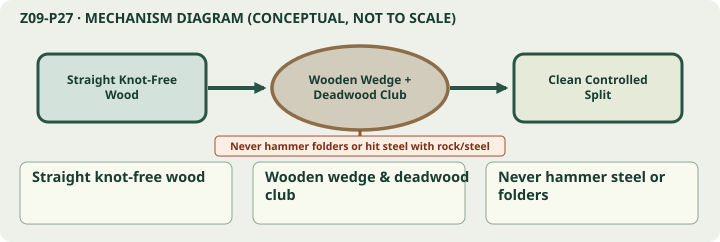

Z09-P27 · Tools and construction · New manuscript
Split small straight-grained deadwood safely using wedges or batoning limits
Expose dry interior kindling cleanly without snapping knife blades or risking hatchet misses.
When it applies · Preparing modest dry inner kindling from straight-grained small deadwood for an authorized fire.
Equipment · Stout wooden wedges and wooden mallet, or—only for small straight wood within blade limits—a full-tang fixed blade and soft deadwood baton.

Actions
- Prefer splitting small straight knot-free wood (wrist diameter or smaller) using wooden wedges driven by a stout deadwood mallet once a shallow starter split opens.[K12, K06, K03]
- If batoning small straight deadwood with a sturdy fixed-blade knife, strike ONLY on the blade spine near the tip with a smooth deadwood club (never steel or rock), stopping immediately if the blade hits a hard knot or starts twisting.[K02, K12, ED]
- Never baton a folding knife, serrated thin blade or oversized knotty log—excess impact shears pivot pins, snaps tangs and bounces blades unpredictably.[K01, K02]
Failure recognition · Hammering a pocket folder with a granite rock through a twisted oak knot, shattering the lock and cutting the holding hand.[K02, K12]
Verify · Confirm straight knot-free wood, flat solid base block, wooden striking baton only and zero fingers near the exit line.[K02, K12, ED]
Stop or change course · If the blade binds hard or wood twists around a knot, stop pounding—tap the blade gently back out or use a wooden wedge to open the split safely.[K02, K06, K12]
Evidence and editorial notes
- K01 · OSHA · Hand and Power Tools Safety and Health Topics (current web edition)
- Section: Hand Tools > General Safety Rules · Conditions: Use of knives, saws, axes, hammers and hand tools
Support: Keep hand tools in good condition, use the right tool for the job, examine each tool for damage before use, operate according to instructions and wear appropriate personal protective equipment.
Limitations: General occupational rules do not replace task-specific forestry or field-tool training. · Conflicting evidence: None; baseline tool safety framework.
Editorial note: Anchors tool selection, pre-use inspection and operating boundary cards in Z09. · Specialist reviewer: Tool safety and occupational safety
Primary source · checked 2026-11-24 - K02 · OSHA · Hand and Power Tools (OSHA 3080) (agency PDF)
- Section: Hand Tools > Knives, Chisels, Impact and Wrenches · Conditions: Manual cutting, striking and prying operations
Support: Direct cutting blades away from the body and bystanders, never use cracked wooden handles or mushroomed striking heads, and do not substitute wrenches or blades as pry bars.
Limitations: Does not specify material tensile ratings for improvised handles. · Conflicting evidence: None; directly informs safe cutting and impact-tool failure cards.
Editorial note: Prevents blade slip, splintered-handle and spalling-metal injuries. · Specialist reviewer: Tool safety and wilderness medicine
Primary source · checked 2026-11-24 - K03 · USDA Forest Service · Handtools for Trail Work (0523-2810-MTDC) (agency handbook)
- Section: Tool Selection, Inspection and Safe Transport · Conditions: Trail and campsite hand tools (axes, saws, shovels, pulaskis, wedges)
Support: Inspect handles for splits, loose heads and secure wedges before every use; sheath sharp edges during carry and maintain a clear work circle around swinging tools.
Limitations: Forestry guidelines apply to maintained commercial tools; improvised stone or salvaged blades carry higher failure risk. · Conflicting evidence: None; aligns with OSHA-3080.
Editorial note: Grounds woodworking, swinging-tool clearance, carrying and maintenance cards. · Specialist reviewer: Forestry tool safety and trail maintenance
Primary source · checked 2026-11-24 - K06 · NPS · Forces and Tools (current web edition)
- Section: Forces and Tools > Simple Machines and Mechanical Advantage · Conditions: Levers, wedges, inclined planes and friction mechanisms
Support: Simple machines trade force for distance (levers, wedges, pulleys); friction, alignment and material strength limit real-world output below ideal ratios.
Limitations: Ideal mechanical advantage ignores friction losses and breaking strength of ropes or anchors. · Conflicting evidence: None; clarifies physical trade-offs without implying engineered load ratings.
Editorial note: Anchors mechanical-advantage, wedge-splitting and pulley/rigging limit cards. · Specialist reviewer: Mechanical engineering and rigging safety
Primary source · checked 2026-11-24 - K12 · USDA Forest Service · Handtools for Trail Work (0523-2810-MTDC) (agency handbook)
- Section: Wedges, Chisels and Striking Surfaces · Conditions: Splitting deadwood or driving stakes with hand tools
Support: Avoid steel-on-steel striking of hardened axe polls or unguarded wedges that can chip metal shards; use wooden mallets or purpose-designed striking faces and retire mushroomed heads.
Limitations: Improvised stone hammers fracture unpredictably and throw sharp flakes. · Conflicting evidence: None; informs baton/wedge/mallet safety cards.
Editorial note: Guides safe splitting, stake driving and struck-tool failure recognition. · Specialist reviewer: Tool safety and materials safety
Primary source · checked 2026-11-24
Source lineage · USFS handtools and OSHA 3080; new manuscript · Classification · New manuscript.